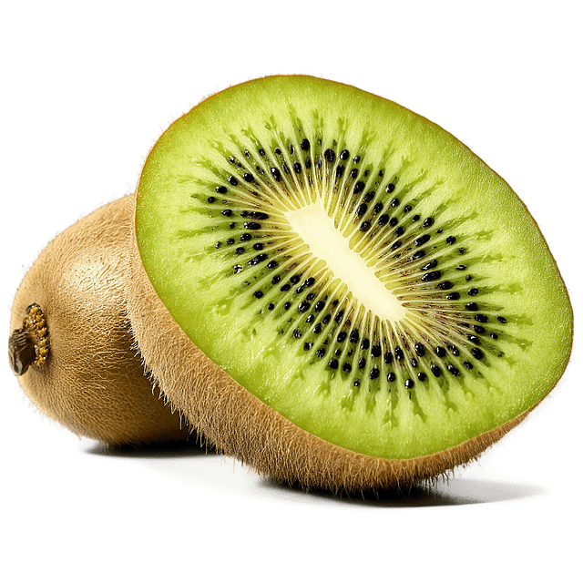

A népnyelv és a konyhaművészet általában gyümölcsnek nevezi a növények édes és húsos termését mint a
szilva, alma, dió vagy narancs.
Régen az erdőben élő gyümölcsfák (vadalma, vadkörte, vadcseresznye, kökény, galagonya, berkenye, som)
terméseit, mogyorót, málnát, erdei szamócát vagy a tüskés szárú szedret gyűjtögették össze. Később az
erdők gyümölcstermő részeit bekerítették, hogy a vadállomány kevésbé férhessen hozzá. Ezeket a
bekerített erdőrészeket vadkerteknek nevezték, és a mai települések nevében is felfedezhetők.
(Soltvadkert, Érsekvadkert, de Almásfüzitő, Balatonalmádi, Dunaalmás is ilyen vadkertek nevét őrzi.)
A gyümölcsök többsége lédús, 80-90% víztartalmú, emiatt kalóriaértékük általában alacsony. Zsír- és
fehérjetartalmuk elenyésző (max.1%), szénhidráttartalmuk változó, az éretlen gyümölcs főleg keményítőt,
az érett gyümölcs- és szőlőcukrot (4-24%), valamint pektint és cellulózt (rostot) tartalmaznak.
Vitaminokban (C-vitamin), ásványi anyagokban (K, Ca, Mg, P, Fe) gazdagok. A gyümölcsök közé tartozó
olajos magvak víztartalma max.10%, fehérjetartalmuk 20% körüli, zsírtartalmuk magas (40-50%), ezért
energiaértékük jelentős. A zsírban oldódó A, D, E, K, F-vitaminok az olajos magvakban vannak jelentős
mennyiségben.
Fogalmak
Kalória A kalória (cal) az energia mértékegysége: egy kalória egy gramm víz hőmérsékletét egy °C-kal
emeli meg. A kalóriát Nicolas Clément vezette be a hő mérésére 1824-ben. Az SI-mértékegységrendszer
bevezetésével a joule nagyrészt kiváltotta; ma főleg az élelmiszerek energiatartalmának mérésére
használják. Ez a meghatározás valójában az ú.n. kiskalória, más néven grammkalória definíciója. A
táplálkozástudomány és a hétköznapi élet egy ennél ezerszer nagyobb mértékegységet nevez kalóriának.
Ennek elavult neve: nagykalória; pontosabb neve kilokalória (=kcal).
Szénhidrát A szénhidrátok vagy tudományos néven szacharidok a növények által, fotoszintézis során
termelt, szén-, oxigén- és hidrogéntartalmú szerves vegyületek, melyekben a H:O arány legtöbbször 2:1
(mint a vízben), ezért régen a szén hidrátjainak gondolták őket. A szénhidrátok hevítéssel vagy erélyes
vízelvonó szer hatására (például tömény kénsav) szénre és vízre bonthatók. (Az 1800-as években
„szénvizegyek” néven emlegették.[1] 1844-ben Carl Schmidt megalkotta a szénhidrát kifejezést.) Fontos
szerepük, hogy élelmiszerként fogyasztva energiát szolgáltatnak az állati és emberi szervezetben
(cukrok): a bevitt energia 50-70%-a szénhidrátokból származik.[2] Tartaléktápanyagok (keményítő),
valamint vázanyagok (cellulóz) a növényekben. Ezenkívül más fontos szerves molekulák felépítésében is
részt vesznek: az RNS ribózt, a DNS dezoxiribózt tartalmaz. A szacharid szó görög eredetű, jelentése
édes. A szénhidrátok közé tartozik például a szőlőcukor (glükóz), a gyümölcscukor (fruktóz), a répa-
vagy nádcukor (szacharóz), a keményítő és a cellulóz.
Zsírok Zsírnak a köznyelv a víztaszító, könnyen kenhető anyagokat nevezi. A kémiai definíció ettől
eltér, mert csak a glicerin zsírsavakkal alkotott háromszoros észtereit, trigliceridjeit hívjuk így. A
köznyelv által olajnak nevezett anyagok egy része szintén ilyen triglicerid. A zsírok az összetett
lipidek közé tartoznak.[1] Biológiailag rendkívül fontos, természetes vegyületek, melyeket növényi és
állati szervezetek állítanak elő.
Fehérje A fehérjék egy szabályosan ismétlődő elemekből álló molekuláris gerinchez, az ún.
peptidgerinchez kapcsolódó aminosavak láncolatából álló makromolekulák. A fehérjék fontos biológiai
szerepét jellemzi, hogy minden sejtben lejátszódó folyamatban részt vesznek. Számos fehérje
enzimaktivitást mutat, azaz valamilyen biokémiai folyamat katalizátoraként segítik elő a sejt életben
maradását. Fehérjék rendelkezhetnek stabilizáló, szerkezeti funkcióval is: sejt alakjának kialakítása
(aktin, mikrotubuláris sejtváz, intermedier filamentum), sejten belüli transzportfolyamatok
lebonyolítása (dinein, kinezin, miozin) mozgatás (akto-miozin rendszer). Más fehérjék a sejt és
környezete közötti információáramlás megvalósítása révén teszik lehetővé, hogy a sejt érzékelni tudja,
és reagálni tudjon a külvilág ingereire.
Rost Az étkezési rostok olyan növényi eredetű szénhidrátok, amelyeket az emberi szervezet nem képes
megemészteni, ezért eljutnak a vastagbélbe. Többféle jótékony hatásuk is van: hatékonyabbá teszik a víz
megkötését, az elfogyasztott ételek felszívódását, a bélműködést, az emésztést. Felszívják az epesav
sóit és a koleszterint, megkötik az emésztéskor termelődő gázok egy részét. A rosthiányos táplálkozás
rövidtávon székrekedést, hosszútávon elhízást, cukorbetegséget vagy akár vastagbélrákot is okozhat.